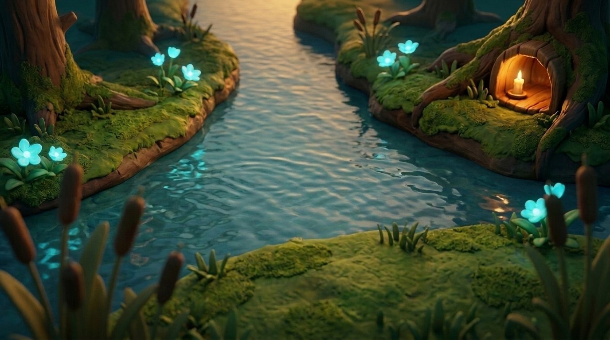
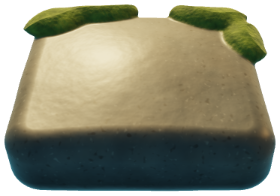
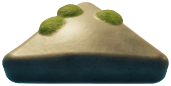
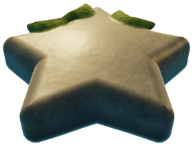
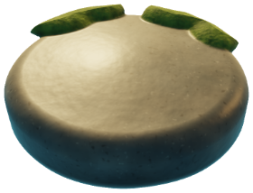
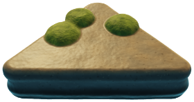
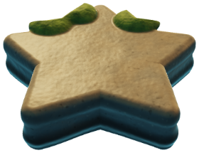
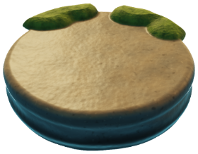

מה שופר בשני המראות: אור שקיעה זהוב מאותו כיוון של הסצנה (מאחור־למעלה), אבן נחל רטובה אמיתית עם טחב קטיפתי (לא חימר אפור), קו מים כהה רטוב וטבעת אדוות סביב אבנים במים, צל רך על הדשא וריכוך עדין לאבנים על הגדה הקדמית, וריבוע חלק לגמרי בלי הבליטה המוזרה. תבחר איזה מראה להכניס למשחק.
מראה א׳ — חלוקי נחל רטובים וחלקים
חלוק נחל כהה ומבריק · אור שקיעה זהובאבני נחל חלקות ומעוגלות שזרם המים שחק, בגוון בזלת וגרניט רטובה עם ברק שקיעה זהוב על הכיפה העליונה, קו מים טורקיז־כהה בתחתית וכריות טחב זיתי.
לפטופ (1280×800) — אבנים במים ועל הגדה






הילד שומע: ״איפה האבן העגולה?״ · כל האבנים יושבות במים עם קו רטוב ואדווה, ועל הדשא עם צל רך וריכוך עדין.
טלפון לאורך (390×844)
עיגול
ריבוע (חלק, בלי בליטה)
משולש
כוכב
מראה ב׳ — אבני צפחה משוכבות וחמימות
צפחה משוכבת · גוון אבן חמיםאבני מדרך שטוחות ומחוספסות בעדינות עם שכבות סלע טבעיות בדופן, משטח עליון חמים שמקבל את אור השקיעה והנר מהמחילה, קו מים כהה וטחב עשיר.
לפטופ (1280×800) — אבנים במים ועל הגדה




הילד שומע: ״איפה האבן העגולה?״ · הדובון קופץ על כל אבן מיד כשהיא מונחת, מנקודת התחלה עם נחל ריק.
טלפון לאורך (390×844)
עיגול
ריבוע (חלק, בלי בליטה)משולש
כוכב